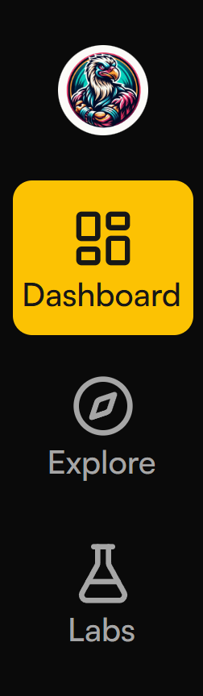

Navigation Built Around the Trader's Day: Dashboard, Agents, Labs
Cut the main navigation from seven page links to three doors, each named after something a trader does: Dashboard to check, Agents to learn, Labs to build. Everything else moves behind More, Settings and the account menu. The look stays the same. What changes is what the user sees first and what each door is for.
Why
Today the first screen does not say what to do first. A new user clicks every button to find out what it is. The reasons, in order:
- No obvious first action. The old top bar holds seven page links and six controls, thirteen things in one strip, and none of them is marked as the place to start. A first-time user clicks around to learn what each one does.
- Too many choices with the same weight. All thirteen look alike and sit in one row. Every extra choice makes picking one slower and less certain.
- Rarely used items compete with the useful ones. Report an issue, display currency, the theme switch, the Gateway light and the server picker sit right next to the pages a trader uses every day. This is the team's own observation. Condor has no usage analytics today, so there is no number behind "rarely used" yet. Measuring it is an open point below.
- The names describe parts of the system, not the trader's work. Trade, DEX, Routines and Bots are things Condor has. A trader does three things: check how things stand, learn what others have built, and build and test their own agents. Doors named after those jobs are easier to guess.
- Simple first helps beginners and takes nothing from experts. The rarely used items do not go away. They move one click further out (More, Settings, the account menu), so the first screen shows only what most people come for.
Counts above come from the ui-redesign code: frontend/src/lib/nav.ts (seven page links) and AppShell.tsx (six top-bar controls).
Research
Each source below was opened and read for this page. The notes are paraphrased and only say what the page itself says. A source that did not open fully is marked.
| Source | Publisher, year | What it says, and which reason it backs |
|---|---|---|
| Hick's Law | Laws of UX; year not shown on the page | The time to decide grows with the number and the complexity of the choices. Its advice is to cut the choices when speed matters and to break a complex task into smaller steps. Backs reasons 1 and 2. |
| Progressive Disclosure | Jakob Nielsen, Nielsen Norman Group, 2006 | Move advanced or rarely used features to a second screen so the first one shows only the most important options. Designs with more than two levels usually do badly, so More and Settings open one panel and stop there. It also says to decide what goes first from task analysis and how often each feature is used, which is why measuring is an open point. Backs reasons 3 and 5. |
| How Many Items in a Navigation Menu? | Page Laubheimer, Nielsen Norman Group, 2019 (video) | The right number depends on four factors and is not the fixed seven that many people quote. Opened partly: the page text loaded, the video did not play, and the four factors are not listed in the text. Used only to say that three is a judgement for Condor, not a rule (see open points). |
| Menu-Design Checklist: 17 UX Guidelines | Page Laubheimer, Nielsen Norman Group, 2024 | Keep navigation visible on larger screens, use clear and familiar labels, and show where the user is now. The rail shows a name under every icon and lights the current door. Backs reason 1. |
| Mental Models and User Experience Design | Megan Chan, Nielsen Norman Group, 2024 (updates a 2010 article by Jakob Nielsen) | Users arrive with expectations about how a system works, and a mismatch is common with new designs. Either match the design to those expectations or help users understand it with clearer labels. Backs reason 4 and the label open points. |
| A Lesson on Top Tasks from Hurricane Beryl | Evan Sunwall, Nielsen Norman Group, 2024 | Top tasks are the things users must be able to do, and a short list of them (about ten) should steer design choices. Most of the article is a case study of an electric utility; only the top-tasks idea is used here. Backs reason 4. |
| Extension Marketplace | Microsoft, VS Code documentation; year not clearly shown on the page | In VS Code, finding and installing add-ons has one place of its own: the Extensions view, with search and filters. Building extensions is covered somewhere else. A model for the Agents door. Opened partly: the first part was read in full, the closing sections only as a summary, and nothing from those is used. |
| Explore | Grafana documentation; year not shown on the page | In Grafana you can query and analyse data without first making a dashboard; dashboards are a separate step. A model for keeping "check" (Dashboard) apart from "build and try" (Labs). |
What this does not show: Hick's law fits quick choices, and picking a trading strategy is slower thought, so it backs the first-click problem and not the whole case. None of these sources measures a trading app. The VS Code and Grafana pages are examples of a separation, not proof that it works for Condor. No other source is used.
Before
Seven page links and six controls share one top strip. Page links: Agents (the chat home), Portfolio, Trade, DEX, Bots, Routines, Settings. Controls: server picker, Gateway light, currency picker, notification bell, report-an-issue button, theme switch. The Agent Hub is not in the strip at all: it opens only from a card at the foot of the Agents list.

ui-redesign baseline (full screen, 1280 by 700 at twice the pixel density, dark theme): thirteen items in one strip, none marked as the place to start.Proposal: three doors
Three main items, in this order. For most of the day these are the things a trader checks or works on.
| Door | The trader's job | What it holds | Today |
|---|---|---|---|
| Dashboard | Check | Portfolio, Bots and Markets in one place. The production view: what is running and how it is doing. | Opens the chat home. The stats page is the next proposal. |
| Agents | Learn | Find and learn about community agents, like a marketplace. An agent that looks useful is imported into Labs to test, not straight into production. | Opens the existing Agent Hub (/hub). Import into Labs is not built. |
| Labs | Build | Design agents, Backtest, Test Run and Diagnose. The development view: where agents are made and proven before they go live. | Placeholder page. The four tools still have to be built. |
Everything else moves out of the main three.
- More (the three dots after Labs): Hummingbot API, Gateway, Keys and Wallets, Servers, Updates and Report an Issue.
- Settings (the gear at the foot of the rail): Agents, LLM Endpoints, Voice & AI, Appearance and Privacy.
- The account menu (the initials at the foot): the user name with the Admin role, and Logout.
- The top bar keeps only Local (the server), Gateway status and Switch Mode.
In numbers: seven page links become three doors. Three small rail items (More, Settings, account) and three top-bar items remain, so nothing in the first row competes with the three doors.
After
A close-up of the left rail from the Condor logo down to More. The Settings gear and the account initials sit below More and are cropped out here; the side-rail proposal shows them and the panels they open.

| Looks like | Name | What it is for |
|---|---|---|
| Condor bird badge | Condor logo | Takes the user home. |
| Four boxes | Dashboard | Check Portfolio, Bots and Markets. Lit here because it is the home page. |
| Robot head | Agents | Learn from community agents and import them to test. |
| Flask | Labs | Build: design, backtest, test run, diagnose. |
| Three dots | More | Server, Gateway, keys, updates and Report an Issue. |
The rail prints each name under its icon, so nothing depends on hovering and there is no second hover image. The page behind the rail is not shown. The close-up is the build of the rail stack tip (ui/panel-rail-v2), against a demo server with no real data.
How it connects to the other proposals
- Left icon rail. That page is the layout: where the rail sits, the panels, the avatar and the phone tab bar. This page is the reason for what goes on the rail. They are one design in two parts, and the same PRs build both.
- Guided first-run onboarding. Onboarding gets a new user set up. This page is about where that user goes next, so the two aim at the same problem: a first-time user who does not know what to do.
- Next proposal: Dashboard as the Default Home Page. A stats dashboard as the home page, so the Dashboard door opens on something made for checking.
Rollout
This proposal has no PR of its own. The rail PRs already carry the three doors, the More and Settings panels and the account menu. What is still missing is listed in the last column.
| PR | What it gives this proposal | Status | Still missing |
|---|---|---|---|
| #3 | The rail: Dashboard, Agents, Labs, More, Settings; the top bar reduced to Local, Gateway status and Switch Mode | Built, tested | Dashboard still opens the chat home |
| #4 | The account menu: name, role, Logout | Built, tested | — |
| #6 | The same doors as a bottom tab bar on phones (Dashboard, Agents, Labs, Account) | Built, tested | — |
| #7 | The Labs door and its page | Placeholder only | Design, Backtest, Test Run, Diagnose; import from Agents |
The Agents door opens the Agent Hub that already exists. Making it a real marketplace, and the import into Labs, are later work.
Open points
- Two things called Agents. The Agents door is the marketplace. Settings also has an entry called Agents, which is agent configuration. Two different things under one name is the kind of mismatch the mental-models research warns about. Options: rename the Settings entry (for example "Agent Settings"), or rename the door.
- Pages with no door. The nav code says Portfolio, Trade, DEX, Routines and Bots have no door for now; their addresses still work and some have panels inside the chat workspace. The Dashboard page should bring Portfolio and Bots back. Trade, DEX and Routines have no home in the three doors yet and need a decision.
- "Rarely used" is not measured. It is the team's own observation. Before moving more things out, Condor could count clicks on each nav item for a few weeks (the progressive-disclosure article advises using how often features are used). Nothing is collected today, and adding analytics is a privacy decision of its own.
- Three is a judgement, not a rule. NN/g says the right number of items depends on several factors. If a fourth job appears (for example trading by hand), revisit it.
- "Labs" may not be obvious to a beginner. The word is new to most traders. Try it with a few first-time users, and consider a one-line hint under the door name on the empty Labs page.
- Import into Labs. How an agent travels from Agents to Labs (one button, a copy, a draft) is not designed yet.
- Not checked yet: light theme, colour-blind mode, a real phone, and the pages that need a Hummingbot server with data.
Decision requested
Approve Dashboard, Agents and Labs as the three main navigation items, with everything else behind More, Settings and the account menu, subject to the open points above. No new PR is needed: it is built by the rail PRs #3, #4, #6 and #7.
Refinement log
Newest first. Add a row for every change that comes out of review.
| Date | Change | Reason / source | PR |
|---|---|---|---|
| 2026-11-27 | The "Next proposal" line now links to the Dashboard proposal page (dashboard-home.html) | The Dashboard proposal was written | #13 |
| 2026-11-27 | First version: why (five reasons, counts from the old nav code), eight researched sources, the three doors, a close-up of the rail with a legend, rollout through the rail PRs, seven open points | User request for a proposal on simplifying the nav for trader use | #13 |